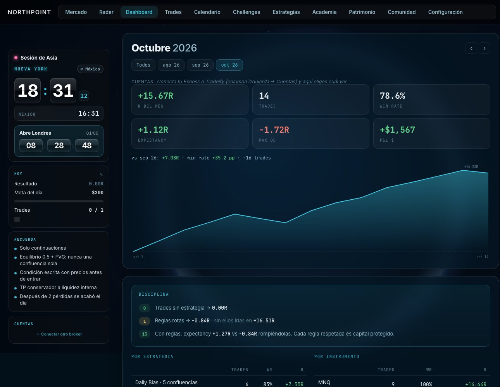
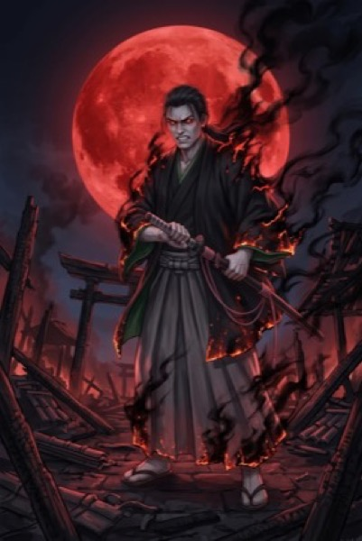
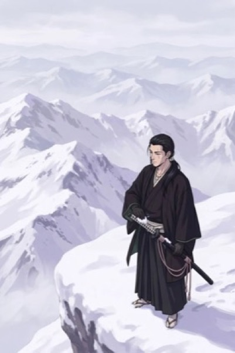
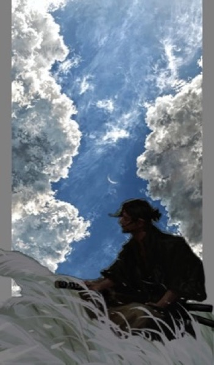
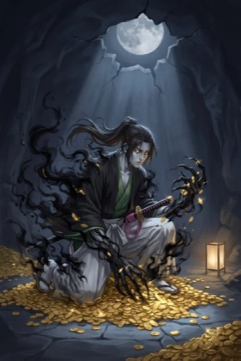
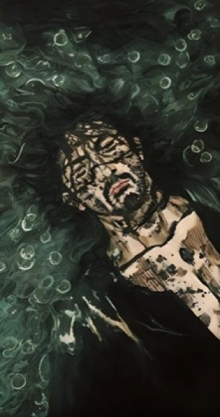

Así se ve por dentro.
Todo tu reto en una sola app: el registro de cada trade, tus números, tu calendario y tu avance.

Detecta tus trades, te pide emociones, motivo y captura, y te dice qué emociones te hacen ganar.
Lo que necesitas para operar mejor cada día.
Registro automático, tus estadísticas, la comunidad y el entrenamiento, en el mismo lugar.
Cada trade, registrado con la cabeza fría.
La app detecta tus trades de Exness. Al entrar y al salir te pide lo que importa: cómo te sientes, por qué entraste y la captura.
Entrada y salida, en segundos.
Emociones de riesgo en rojo, para que veas cuándo operas desde el FOMO o la prisa.
Tu trading, con números honestos.
Dashboard, calendario, estadísticas por estrategia y la comunidad del equipo con ranking.

Hecha para tu escritorio.
Entras al trade y el journal se abre solo: reloj, P&L en vivo y tu registro. Cierras y queda guardado con tus emociones y tu captura.
No operes solo.
Tu equipo en la app y en Discord: ranking por balance real, trades compartidos y análisis diario de la mesa.
La disciplina se colecciona.
Dentro de los retos, cada objetivo cumplido te da una carta. 30 en 4 rarezas.





Aprende con el equipo. Opera con el equipo.
Cursos a tu ritmo y sesiones en vivo dentro de la comunidad NORTHPOINT. Lo que aprendes lo registras en tu journal el mismo día.
De cero a tu primera cuenta fondeada
Módulos cortos, en video, que ves cuando quieras y en el orden que quieras.
- FundamentosCómo se mueve el mercado y cómo leer una gráfica
- RiesgoTamaño de posición y cómo proteger tu cuenta
- PsicologíaEmociones, rachas y disciplina
- FondeoCómo pasar una evaluación y cobrar
- Tu journalSacarle el máximo a NORTHPOINT
Sesiones con el equipo
Entras a la sala, ves el mercado con nosotros y preguntas en el momento.
- Antes de la aperturaQué vigilar en la sesión
- Mercado en vivoLectura en tiempo real, con chat
- RevisiónRepasamos trades del día, con sus registros
- PreguntasResuelve tus dudas directo con el equipo
Y si quieres un reto, la app te lo lleva.
Kaizen es mejorar un poco cada día. Aquí se mide: cada día tiene un objetivo, cada semana una meta y cada mes un hito.
Doblar cada semana
Cuatro semanas con una meta clara cada semana y un objetivo para cada día.
- Objetivo del día, siempre a la vista
- Tu avance semana por semana
- Cartas al cumplir
Construir la cuenta
Se desbloquea al llegar a $1,000. Reglas fijas que la app te recuerda en cada trade.
- Riesgo calculado por la app
- Tus reglas en cada registro
- Hitos rumbo a $15,000
El camino, semana por semana.
Eliges el día en que empiezas y la app arma tus 26 semanas. Siempre sabes en qué semana del mes vas.
Las cifras del reto son metas de disciplina, no promesas de rendimiento. El resultado depende de cómo operes.
Tu reto tiene historia.
Al empezar ALPHA KAIZEN WAY llega el herrero y te entrega tu katana. Al tocarla se enciende de un color, y ese color dice qué tipo de trader eres.

Elige tu plan.
7 días gratis en la app. Después, un pago mensual. Cancelas cuando quieras.
Tu journal, ordenado y con números.
- Journal y Log trade ilimitados
- Dashboard y calendario
- 1 cuenta conectada
- Mercado en vivo
- Bias y comunidad
- Retos ALPHA KAIZEN WAY
Todo NORTHPOINT: journal, comunidad, bias y retos.
- Todo lo de Starter
- Todas tus cuentas conectadas
- Bias por sesión: Asia, Londres y NY
- Comunidad y Discord NORTHPOINT
- Ranking del equipo
- Retos ALPHA KAIZEN WAY
Para oficinas y equipos de trading.
- Todo lo de Pro
- Hasta 5 traders
- Mesa privada con ranking
- Soporte directo
Lo que más nos preguntan.
¿Qué incluye NORTHPOINT?
Journal con detección automática de trades, Log trade con emociones y capturas, Bias del equipo por sesión, comunidad con ranking, mercado en vivo y los retos ALPHA KAIZEN WAY.
¿Los retos garantizan resultados?
No. Son retos de disciplina con objetivos medibles. El resultado depende de cómo operes; la app te ayuda a medir y a respetar tus reglas.
¿Con qué broker funciona?
Exness entra en vivo: cuentas, saldo y trades. También puedes registrar cualquier trade a mano con Log trade.
¿Cómo se ganan las cartas?
Cumpliendo objetivos: el del día, la semana doblada, el mes completo y los hitos de tu cuenta. La rareza depende del objetivo.
¿Dónde quedan mis datos?
En tu computadora. Solo lo que decides compartir con la comunidad (tu bias y tus resultados) viaja al equipo.
¿Cómo cancelo?
Desde el correo de tu suscripción, en un clic. La app sigue funcionando hasta el final del periodo pagado.